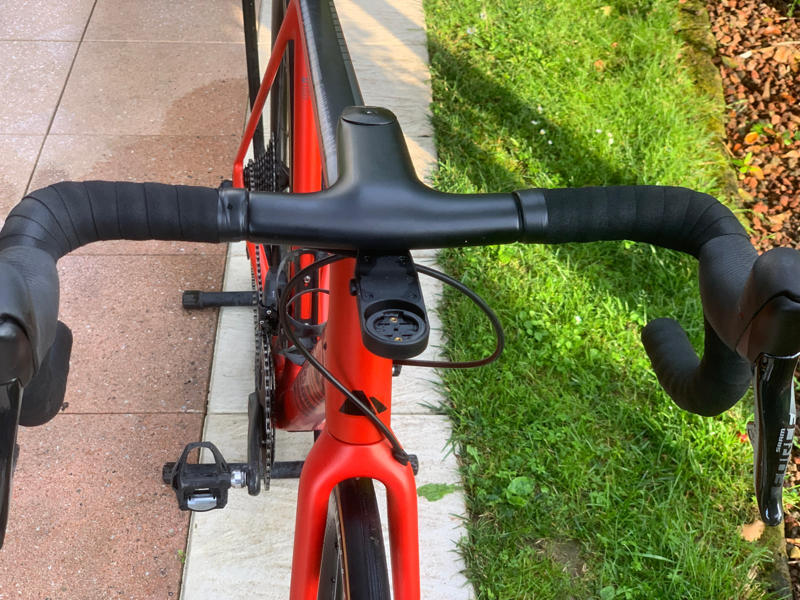

Canyon - the new bike
The decision to purchase a new bike to replace my old van Rysel one was filled with mixed emotions.
It signifies the end of an era and the beginning of a new journey, blending nostalgia with excitement. For many cyclists, upgrading to a new bike brings both a sense of loss and a surge of anticipation for the adventures ahead.
Choosing a new bicycle is a careful process, especially when replacing a trusty old companion. Today's bikes offer advanced features and improved performance, making the transition easier. Modern bicycles come with lightweight frames, enhanced suspension systems, and superior gearing, providing a smoother, more efficient ride.
Replacing my old van Rysel bike with a this new one opens up a world of possibilities. The advanced technology in contemporary bikes enhances the overall cycling experience. I can enjoy better control, increased speed, and much, much greater comfort, making each ride more enjoyable and efficient.
Canyon Endurace CF SLX
It not only looks good, but it's a superb upgrade from the old bike.
Saying goodbye to my old bike was not easy — it had been with me through countless rides, through beautiful places, falls, rainny and sunny days, winters and summers. It was a good bike, but my new bike is incredible. It's faster, more comfortable, and I'm already planning new routes to explore.

Some specs:
Canyon Endurace CF SLX
Frame size: L
Material: Carbon (CF)
Weight: 7.4kg
Wheels: Reynolds, profile height 45mm
Tyres: Vittoria Corsa w/ 28mm width
Drivetrain: SRAM Force AXS w/ Di2
Cassette: SRAM, 12-speed, 10-33
Chainrings: 48 - 35
Chain: SRAM Rival D1 12s
Brakes: Disk brakes
Saddle: Selle San Marco 135
Power meters: Assioma Duo
Seatpost: Canyon S15 VCLS CF

I trully like this bike, it's smaller than vanRysel, but it fits me better. And about fitting, mybe it will be a good idea to follow a bike fitting from a professional bikeshop.
Here’s to new beginnings—may my rides be smooth, my paths clear, and my experiences unforgettable with this Canyon Endurace CF SLX bike